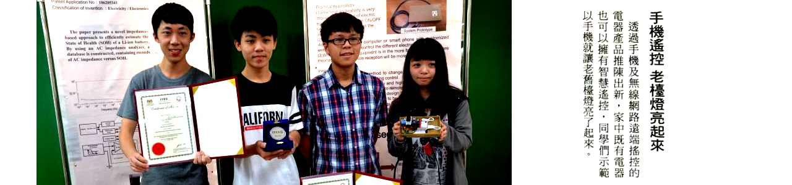

期刊論文
| 序號 | 論文名稱 |
| 1 | Cheng-Hsiu Li*(2026). Enhancing Vocational Certification Learning through a Gamified Chatbot: Evidence from a Quasi-Experimental Study, Advances in Mobile Learning Educational Research, vol. 6, no. 1, pp.1653-1667. (AMLER)(ICV 2024=82.67) |
| 2 | Cheng-Hsiu Li*(2025). Knowledge Representation Strategies for Reducing Hallucinations in Retrieval-Augmented Domain-Specific Question Answering, International Journal of Engineering and Technology Innovation. (IJETI)(ESCI, EI)(accept). |
| 3 | Cheng-Hsiu Li* & Hao-Sheng Hou (2025). Enhancing Synchronization of YOLO-Based Traffic Detection on Low-End Devices by Using the COID Algorithm, Proceedings of Engineering and Technology Innovation. (PETI)(Scopus)(in press). |
| 4 | 李承修*(2025)。新興科技應用於電腦硬體裝修乙級檢定課程之創新與教學實踐研究。大學教學實務與研究學刊。(已接受刊登) |
| 5 | Cheng-Hsiu Li*(2025). Development and Application of a Body Joint Angle Detection System for Free-Throw Shooting Prediction and Posture Correction, International Journal of Engineering and Technology Innovation, Vol.15, No.1, pp.99-112. (IJETI)(ESCI, EI). |
| 6 | Cheng-Hsiu Li*(2024). Integrating Gamification Elements into a Personalized Cognitive Mobile-learning LINE Bot, Emerging Science Innovation, Vol.3, pp.27-42. (EMSI). |
| 7 | Yu-Hung Hsu & Cheng-Hsiu Li*(2024). Using Machine-Learning Technology to Implement a Nonhardware and Inexpensive Posture Detection System for Analyzing Body Posture Angles in Front Crawl Swimming, Journal of Computers, Vol.35, No.1, pp.131-143. (JOC)(EI). |
| 8 | Cheng-Hsiu Li*(2023). Instructional Design, Learning Satisfaction, and Learning Outcome in a Virtual-Reality Learning Environment Aimed at Improving the Cognition of Computer Hardware Components, International Journal of Engineering and Technology Innovation, Vol.13, No.2, pp.111-124. (IJETI).(ESCI, EI) |
| 9 | Cheng-Hsiu Li*(2021). Building an asynchronous HTML5-related competency-based guided e-learning system, IOP Conference Series: Materials Science and Engineering (MSE), 1113 012015, doi:10.1088/1757-899X/1113/1/012015. |
| 10 | Cheng Hsiu Li*, Chi Yu Chen, Xuan Rui Huang, Ting Fu Tsai and Bo Yang Liu (2021). Development and application of an internet of things door lock Network Bridge for classroom access control management, IOP Conference Series: Materials Science and Engineering (MSE), 1113 012022, doi:10.1088/1757-899X/1113/1/012022. |
| 11 | Cheng-Hsiu Li*(2019). Gamification of an Asynchronous HTML5-Related Competency-Based Guided Learning System, IOP Conference Series: Materials Science and Engineering (MSE), 658 012004, doi:10.1088/1757-899X/658/1/012004.(EI) |
| 12 | Cheng-Hsiu Li*(2018). A proficiency-based learning algorithm applied to e-learning system for knowledge-oriented course, MATEC Web of Conferences, Vol. 169, 01002.(EI) |
| 13 | 李承修*、徐偉智(2018)。運用協作式電腦輔助學習機制於可合作式專案企劃訓練系統之設計與實現。數位學習科技期刊，第10卷，第1期，pp.1-30。(TSSCI) |
| 14 | Feng-Ying Chou, Cheng-Chang Jeng & Cheng-Hsiu Li(2017), Verifying the Mediating Effect of the Expectations of Significant Others on the Academic Achievement and Self-Expectations of Indigenous Students, Imperial Journal of Interdisciplinary Research (IJIR), Vol.3, No.2, pp.248-250. |
| 15 | Feng-Ying Chou, Cheng-Chang Jeng & Cheng-Hsiu Li(2016), An Exploration into the Family Backgrounds and Educational Expectations of Indigenous Students with Academic Achievement as an Intervening Variable, Journal of Education & Social Policy, Vol.3, No.6, pp.27-31. |
| 16 | 李承修*(2014)。利用決策樹分類最佳化演算法實現連續數值型態之最佳化分類。臺東專科學校學報，第3期，pp.1-24。 |
| 17 | Wei-Chih Hsu and Cheng-Hsiu Li* (2013), An Adaptively-guiding Web-based E-learning System Based on Competency-based Learning Theory, Applied Mechanics and Materials, Vols. 284-287, pp 3305-3309. (EI) |
| 18 | Wei-Chih Hsu and Cheng-Hsiu Li* (2012), A competency-based guided-learning algorithm applied on adaptively guiding e-learning, Interactive Learning Environments, DOI:10.1080/10494820.2012.745432 (SSCI) |
| 19 | Wei-Chih Hsu and Cheng-Hsiu Li*(2012), Using Script Command to Conquer the Narrowband Constraint in Synchronous Long-distance Teaching System, Appl. Math. Inf. Sci. , Vol.6, No.2S, pp.685S-695S. (SCI) |
| 20 | Wei-Chih Hsu and Cheng-Hsiu Li*(2011), Implementation and Effective Evaluation of the Portable MOODLE E-learning Platform, American Journal of Engineering and Technology Research, Vol.11, No.12, pp.2679-2682. (EI) |
| 21 | 周鳳英、鄭承昌、連廷嘉、李承修(2009)。校園網路留言板分析與權力運作之研究。網路社會學通訊，第76期。 |
| 22 | 李承修*、周鳳英(2007)。電腦輔助教學在電腦硬體裝修乙級檢定之應用與學習滿意度之研究-以台東縣花東縱谷地區職業學校為例。師說雙月刊，第201期，pp.50-59。 |
| 23 | 周鳳英、李承修*(2007)。Live CD技術在電腦硬體裝修丙級檢定之應用-讓伺服器帶著走。生活科技教育期刊，四十卷，第一期，pp.53-69。 |
國立臺東專科學校資訊管理科 李承修副教授